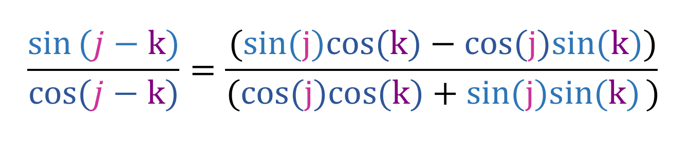
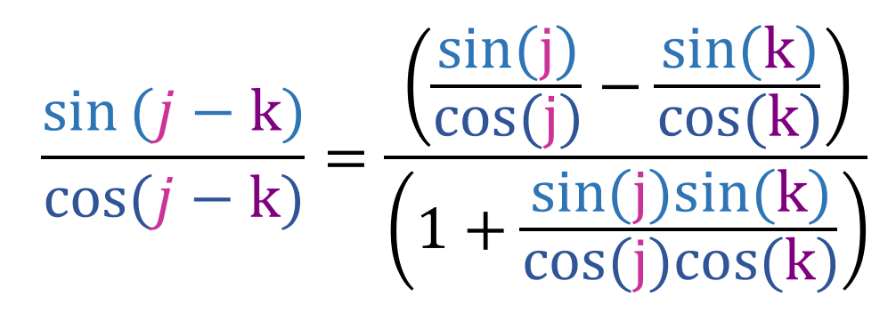
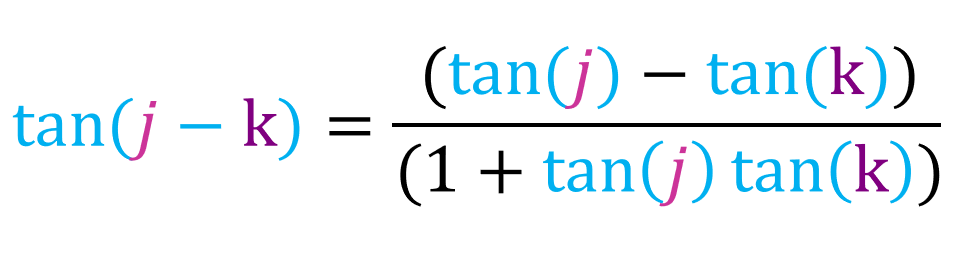
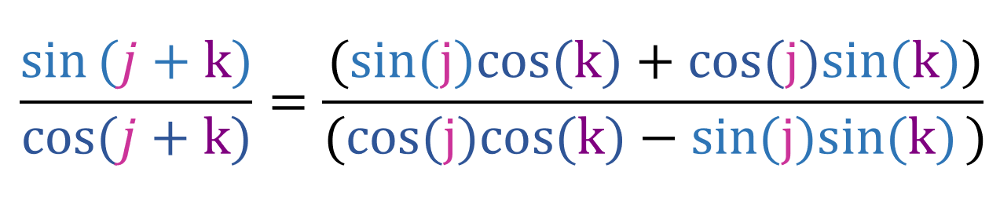
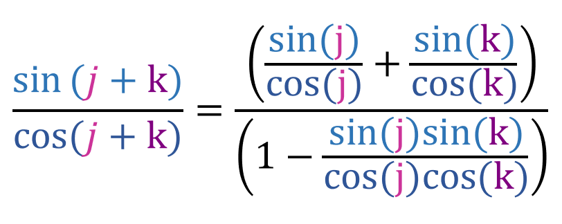

Before reading the proof, you must be familiar with the addition and subtraction rule for cosine and sine. As for the proof, first lets start by dividing sin(j - k) by cos(j - k):
Now lets divide both the numerator and the denominator by cos(j)cos(k):
We already know that tan(x) is [sin(x)/cos(x)], so:
And that is the subtraction formula for tan(x) As for the addition rule, we do the same thing we did above but with sin(j + k) and cos(j + k) instead:
Now lets divide both the numerator and the denominator by cos(j)cos(k):
We already know that tan(x) is [sin(x)/cos(x)], so:
And that is the addition formula for tan(x).